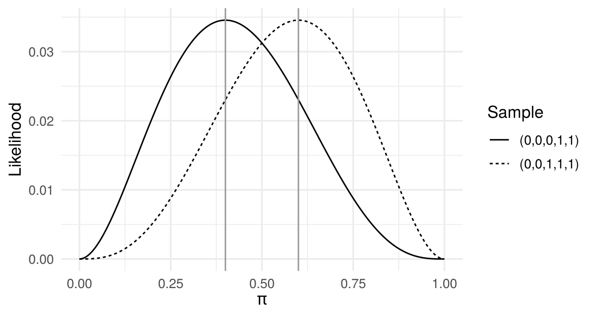
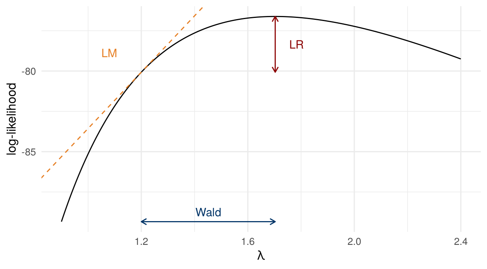

1 Maximum Likelihood
\[ \newcommand{\bm}[1]{\boldsymbol{#1}} \newcommand{\btheta}{\boldsymbol{\theta}} \newcommand{\bbeta}{\boldsymbol{\beta}} \newcommand{\bgamma}{\boldsymbol{\gamma}} \newcommand{\bx}{\boldsymbol{x}} \newcommand{\by}{\boldsymbol{y}} \newcommand{\bX}{\boldsymbol{X}} \newcommand{\bR}{\boldsymbol{R}} \newcommand{\br}{\boldsymbol{r}} \newcommand{\bh}{\boldsymbol{h}} \newcommand{\bz}{\boldsymbol{z}} \newcommand{\bZ}{\boldsymbol{Z}} \newcommand{\bW}{\boldsymbol{W}} \newcommand{\bA}{\boldsymbol{A}} \newcommand{\bV}{\boldsymbol{V}} \newcommand{\bu}{\boldsymbol{u}} \newcommand{\bw}{\boldsymbol{w}} \newcommand{\bpsi}{\boldsymbol{\psi}} \newcommand{\balpha}{\boldsymbol{\alpha}} \newcommand{\bdelta}{\boldsymbol{\delta}} \newcommand{\bmu}{\boldsymbol{\mu}} \newcommand{\bg}{\boldsymbol{g}} \newcommand{\bS}{\boldsymbol{S}} \newcommand{\bD}{\boldsymbol{D}} \newcommand{\bI}{\boldsymbol{I}} \newcommand{\E}{\mathbb{E}} \newcommand{\Var}{\operatorname{Var}} \newcommand{\AVar}{\operatorname{Avar}} \newcommand{\cvp}{\xrightarrow{\;p\;}} \newcommand{\cvd}{\xrightarrow{\;d\;}} \newcommand{\iid}{\overset{\text{iid}}{\sim}} \newcommand{\KLIC}{\operatorname{KLIC}} \newcommand{\pd}[2]{\frac{\partial #1}{\partial #2}} \]
Readings
Maximum likelihood (ML) is the workhorse estimator for fully specified parametric models. This chapter introduces the likelihood principle, derives the large-sample properties of the MLE, discusses what happens when the assumed density is wrong, and closes with the classical trinity of tests.
1.1 Parametric models
We first consider unconditional distributions. A parametric model for a random variable \(Y\) is a complete probability function \(f(y\mid\btheta)\) that depends on an unknown parameter vector \(\btheta\) in a parameter space \(\Theta\). We use the same notation for probability mass functions (discrete \(Y\)) and densities (continuous \(Y\)). For example, \(Y\sim N(\mu,\sigma^2)\) has density \(f(y\mid\mu,\sigma^2)=\sigma^{-1}\phi\big((y-\mu)/\sigma\big)\) with \(\phi(z)=(2\pi)^{-1/2}\exp(-z^2/2)\), \(\mu\in\mathbb{R}\) and \(\sigma^2>0\). A parametric model need not be a textbook distribution; it can be built for a specific application.
Definition 1.1 (Model) A model for a random sample is the assumption that \(Y_1,\dots,Y_n\) are i.i.d. with a known density (or mass) function \(f(y\mid\btheta)\) and unknown parameter \(\btheta\in\Theta\).
Definition 1.2 (Correct specification) A model is correctly specified if there exists a unique \(\btheta_0\in\Theta\) such that \(f(y\mid\btheta_0)=f(y)\), the true density. \(\btheta_0\) is the true parameter value. Uniqueness means that no other \(\btheta\in\Theta\) satisfies \(f(y\mid\btheta)=f(y\mid\btheta_0)\). A model is misspecified if no \(\btheta\in\Theta\) satisfies \(f(y\mid\btheta)=f(y)\).
Example 1.1 (Correct and incorrect models) Let the true density be \(f(y)=2e^{-2y}\), \(y>0\).
- The exponential model \(f(y\mid\lambda)=\lambda^{-1}e^{-y/\lambda}\) is correctly specified with \(\lambda_0=1/2\).
- The gamma model \(f(y\mid\alpha,\beta)=\frac{\beta^\alpha}{\Gamma(\alpha)}y^{\alpha-1}e^{-\beta y}\) is correctly specified with \((\alpha_0,\beta_0)=(1,2)\).
- The log-normal model \(f(y\mid\theta,\nu)=(2\pi\nu)^{-1/2}y^{-1}\exp\{-(\ln y-\theta)^2/(2\nu)\}\) is misspecified: no \((\theta,\nu)\) reproduces \(2e^{-2y}\).
Uniqueness matters. A two-component normal mixture \(p\,\phi_{\sigma_1}(y-\mu_1)+(1-p)\,\phi_{\sigma_2}(y-\mu_2)\) contains the standard normal \(\phi(y)\), but at many parameter values: \((p,0,1,0,1)\) for any \(p\), \((1,0,1,\mu_2,\sigma_2^2)\) for any \((\mu_2,\sigma_2^2)\), and so on. The model contains the truth, but \(\btheta_0\) is not identified, so it is not correctly specified in the sense of Definition 1.2.
1.2 The likelihood function and the MLE
The likelihood is the joint density of the sample, evaluated at the observed data and viewed as a function of \(\btheta\). Under independence it factorises, and under identical distributions all factors share the same form:
\[ L_n(\btheta)=f(y_1,\dots,y_n\mid\btheta)=\prod_{i=1}^n f(y_i\mid\btheta), \qquad \ell_n(\btheta)\equiv\ln L_n(\btheta)=\sum_{i=1}^n \ln f(y_i\mid\btheta). \]
Definition 1.3 (Maximum likelihood estimator) The MLE is the parameter value that maximises the likelihood, \[ \hat\btheta_n=\arg\max_{\btheta\in\Theta} L_n(\btheta)=\arg\max_{\btheta\in\Theta}\frac1n\sum_{i=1}^n\ln f(y_i\mid\btheta). \] The second equality holds because \(\ln(\cdot)\) is strictly increasing and scaling by \(1/n\) does not change the maximiser.
The MLE is the parameter value under which the observed sample is most likely. Working with the average log-likelihood is convenient: it is a sample mean, so laws of large numbers and central limit theorems apply directly.
Example 1.2 (Bernoulli) Let \(Y_i\iid\text{Bernoulli}(\pi)\), so \(f(y\mid\pi)=\pi^{y}(1-\pi)^{1-y}\) for \(y\in\{0,1\}\). Then \[ \ell_n(\pi)=\sum_{i=1}^n\big[y_i\ln\pi+(1-y_i)\ln(1-\pi)\big]=n\big[\bar y\ln\pi+(1-\bar y)\ln(1-\pi)\big]. \] The first-order condition \(n\bar y/\pi-n(1-\bar y)/(1-\pi)=0\) gives \(\hat\pi=\bar y\). Figure 1.1 plots the likelihood for two samples of size five.
In practice we find the MLE in one of three ways:
- Solve the first-order condition \(\partial\ell_n(\btheta)/\partial\btheta=\bm 0\) and check the second-order condition. The FOC is necessary but not sufficient, and it only locates interior extrema; a maximum on the boundary of \(\Theta\) need not satisfy it.
- Direct argument, for instance by finding an upper bound of the likelihood that is attained at a unique point. The uniform distribution on \([0,\theta]\) is the standard case: the likelihood \(\theta^{-n}\mathbf 1\{\theta\ge\max_ix_i\}\) is maximised at the largest observation. Problem Set 1 treats a shifted exponential distribution, where the same argument applies.
- Numerical optimisation when no closed form exists (logit, probit, Tobit, …). We then have to worry about convergence to a local rather than a global maximum.
Example 1.3 (Exponential) Let \(f(y\mid\lambda)=\lambda^{-1}e^{-y/\lambda}\), \(y>0\). The log-likelihood and its derivatives are \[ \ell_n(\lambda)=-n\ln\lambda-\frac{n\bar y}{\lambda},\qquad \frac{d\ell_n}{d\lambda}=-\frac n\lambda+\frac{n\bar y}{\lambda^2},\qquad \frac{d^2\ell_n}{d\lambda^2}=\frac{n}{\lambda^2}-\frac{2n\bar y}{\lambda^3}. \] The unique root of the FOC is \(\hat\lambda=\bar y\), and \(d^2\ell_n(\hat\lambda)/d\lambda^2=-n/\bar y^2<0\) confirms a maximum.
Theorem 1.1 (Invariance) If \(\hat\btheta\) is the MLE of \(\btheta\in\mathbb{R}^m\), then for any function \(\bbeta=h(\btheta)\in\mathbb{R}^l\) the MLE of \(\bbeta\) is \(\hat\bbeta=h(\hat\btheta)\).
In Example 1.3, reparametrise with the rate \(\beta=1/\lambda\). Then \(\ell_n(\beta)=n\ln\beta-\beta n\bar y\), maximised at \(\hat\beta=1/\bar y=h(\hat\lambda)\), as the theorem predicts. Most estimators do not share this property; an unbiased estimator of \(\lambda\), for example, does not deliver an unbiased estimator of \(1/\lambda\).
1.3 Score, Hessian and information
Assume \(f(y\mid\btheta)\) is twice differentiable in \(\btheta\in\mathbb{R}^k\).
Definition 1.4 (Score and Hessian) The score is the \(k\times1\) gradient of the log-likelihood and the Hessian is the \(k\times k\) matrix of second derivatives: \[ S_n(\btheta)=\pd{\ell_n(\btheta)}{\btheta}=\sum_{i=1}^n \underbrace{\pd{\ln f(y_i\mid\btheta)}{\btheta}}_{S_i(\btheta)}, \qquad H_n(\btheta)=\frac{\partial^2\ell_n(\btheta)}{\partial\btheta\,\partial\btheta'}=\sum_{i=1}^n \underbrace{\frac{\partial^2\ln f(y_i\mid\btheta)}{\partial\btheta\,\partial\btheta'}}_{H_i(\btheta)}. \]
The score measures how sensitive the log-likelihood is to the parameters; at an interior MLE, \(S_n(\hat\btheta)=\bm 0\). The Hessian is symmetric and measures curvature. If \(H_n(\btheta)\) is negative definite for all \(\btheta\), \(\ell_n\) is strictly concave and a maximiser, if it exists, is unique. (The converse does not hold: a strictly concave function can have a singular Hessian at some points.) Both are sums over observations because the log-likelihood is.
Theorem 1.2 (Properties of the likelihood) Suppose the model is correctly specified, the support of \(Y\) does not depend on \(\btheta\), and \(\btheta_0\) is in the interior of \(\Theta\). Then
\(\E\big[S_i(\btheta_0)\big]=\bm 0\);
information matrix equality: \(\E\big[S_i(\btheta_0)S_i(\btheta_0)'\big]=-\E\big[H_i(\btheta_0)\big]\equiv\mathcal I_1(\btheta_0)\).
\(\mathcal I_1\) is the (Fisher) information of a single observation and \(\mathcal I(\btheta_0)=n\mathcal I_1(\btheta_0)\) that of the sample. Because the score has mean zero, the left side of (ii) is the variance of the score. Part (i) follows from differentiating \(\int f(y\mid\btheta)\,dy=1\) under the integral sign; part (ii) from differentiating once more. The support condition guarantees that this exchange of differentiation and integration is allowed. The uniform \(U[0,\theta]\) violates it, which is why its MLE behaves non-standardly.
Proof of Theorem 1.2
Write \(f=f(y\mid\btheta)\) and use \(\pd{f}{\btheta}=\pd{\ln f}{\btheta}\,f\).
(i) A density integrates to one for every \(\btheta\): \(\int f(y\mid\btheta)\,dy=1\). Differentiate with respect to \(\btheta\) and exchange derivative and integral: \[ \bm 0=\int\pd{f}{\btheta}\,dy=\int\pd{\ln f}{\btheta}\,f\,dy=\E\Big[\pd{\ln f(y\mid\btheta)}{\btheta}\Big]. \qquad (*) \] At \(\btheta=\btheta_0\) the expectation is over the true distribution, so \(\E[S_i(\btheta_0)]=\bm 0\).
(ii) \((*)\) holds for every \(\btheta\), so we can differentiate it with respect to \(\btheta'\). By the product rule, \[ \bm 0=\int\frac{\partial^2\ln f}{\partial\btheta\,\partial\btheta'}\,f\,dy+\int\pd{\ln f}{\btheta}\pd{f}{\btheta'}\,dy =\E\Big[\frac{\partial^2\ln f}{\partial\btheta\,\partial\btheta'}\Big]+\E\Big[\pd{\ln f}{\btheta}\pd{\ln f}{\btheta'}\Big], \] using \(\pd{f}{\btheta'}=\pd{\ln f}{\btheta'}f\) in the second term. Rearranging gives \(\E[S_iS_i']=-\E[H_i]\). \(\square\)
Theorem 1.3 (Cramér–Rao lower bound) Under the same regularity conditions, any unbiased estimator \(\tilde\btheta\) of \(\btheta_0\) satisfies \(\Var(\tilde\btheta)\succeq\mathcal I(\btheta_0)^{-1}\).
Example 1.4 (Bernoulli, continued) For one observation, \(S_i(\pi)=\dfrac{y_i-\pi}{\pi(1-\pi)}\) and \(H_i(\pi)=-\dfrac{y_i}{\pi^2}-\dfrac{1-y_i}{(1-\pi)^2}\). At \(\pi_0\): \(\E[S_i]=0\), \(\Var(S_i)=\dfrac{\pi_0(1-\pi_0)}{\pi_0^2(1-\pi_0)^2}=\dfrac{1}{\pi_0(1-\pi_0)}\), and \(-\E[H_i]=\dfrac1{\pi_0}+\dfrac1{1-\pi_0}=\dfrac{1}{\pi_0(1-\pi_0)}\). The information equality holds and the CRLB is \(\pi_0(1-\pi_0)/n\), which \(\hat\pi=\bar y\) attains.
1.3.1 Conditional likelihood
Econometric models are usually about the distribution of \(y\) given covariates \(\bx\). Write the joint density as \(f(y,\bx\mid\bm\delta)=f(y\mid\bx;\btheta)\,f(\bx\mid\bgamma)\) with \(\bm\delta=(\btheta',\bgamma')'\). If \(\btheta\) and \(\bgamma\) share no elements and are not linked by restrictions, \[ \ell_n(\bm\delta)=\sum_{i=1}^n\ln f(y_i\mid\bx_i;\btheta)+\sum_{i=1}^n\ln f(\bx_i\mid\bgamma), \] and \(\btheta\) can be estimated from the conditional log-likelihood \(\sum_i\ln f(y_i\mid\bx_i;\btheta)\) alone, leaving the distribution of \(\bx\) unspecified. All results above carry over with expectations taken over the joint distribution of \((y,\bx)\).
1.4 Asymptotic properties of the MLE
Theorem 1.4 (Consistency (Wooldridge 2010, Thm. 13.1)) Suppose (a) the conditional density \(f(y\mid\bx;\btheta)\) is correctly specified; (b) \(\btheta_0\) is globally identified: for every \(\btheta\ne\btheta_0\) in \(\Theta\), \(P\{f(y\mid\bx;\btheta)\ne f(y\mid\bx;\btheta_0)\}>0\); (c) \(\Theta\) is compact and the log-likelihood is continuous in \(\btheta\) with a dominance condition. Then \(\hat\btheta_n\cvp\btheta_0\).
The idea: \(\frac1n\ell_n(\btheta)\cvp\E[\ln f(y\mid\bx;\btheta)]\) uniformly in \(\btheta\), and the limit is uniquely maximised at \(\btheta_0\) (this follows from the KLIC inequality in Section 1.6). The maximiser of the sample objective then converges to the maximiser of the limit.
Theorem 1.5 (Asymptotic normality and efficiency) Under additional regularity conditions (interior \(\btheta_0\), twice continuously differentiable log-density, nonsingular \(\mathcal I_1(\btheta_0)\)), \[ \sqrt n\,(\hat\btheta_n-\btheta_0)\cvd N\big(\bm 0,\;\mathcal I_1(\btheta_0)^{-1}\big). \] The MLE is asymptotically efficient: its asymptotic variance attains the Cramér–Rao bound, and no consistent and asymptotically normal estimator has a smaller asymptotic variance under the same assumptions.
Sketch. A mean-value expansion of the FOC around \(\btheta_0\) gives \(\bm 0=S_n(\hat\btheta)=S_n(\btheta_0)+H_n(\bar\btheta)(\hat\btheta-\btheta_0)\), so \[ \sqrt n(\hat\btheta-\btheta_0)=\Big[-\tfrac1nH_n(\bar\btheta)\Big]^{-1}\tfrac{1}{\sqrt n}S_n(\btheta_0). \] Here \(\bar\btheta\) lies between \(\hat\btheta\) and \(\btheta_0\), \(\bar\btheta=\btheta_0+\lambda(\hat\btheta-\btheta_0)\) with \(0\le\lambda\le1\) (row by row), so \(\bar\btheta\cvp\btheta_0\) because \(\hat\btheta\) is consistent. By the LLN and consistency, \(-\frac1nH_n(\bar\btheta)\cvp\mathcal I_1(\btheta_0)\equiv\bm A_0\). By the CLT and Theorem 1.2, \(\frac1{\sqrt n}S_n(\btheta_0)\cvd N(\bm 0,\bm B_0)\) with \(\bm B_0=\E[S_iS_i']\). For a product of a matrix \(\bm H_n\cvp\bm H\) and a vector \(\bm b_n\cvd N(\bm\mu,\bm B)\), Slutsky’s theorem gives \(\bm H_n\bm b_n\cvd N(\bm H\bm\mu,\bm H\bm B\bm H')\) (Appendix A). With \(\bm H_n=[-\frac1nH_n(\bar\btheta)]^{-1}\) this yields the general form \(N(\bm 0,\bm A_0^{-1}\bm B_0\bm A_0^{-1})\), which collapses to \(\mathcal I_1^{-1}\) because \(\bm A_0=\bm B_0\) under correct specification. Keep this sandwich form in mind; it reappears in Section 1.6 and in GMM.
1.5 Estimating the variance matrix
In finite samples we use \(\Var(\hat\btheta)\approx\frac1n\mathcal I_1(\btheta_0)^{-1}=\mathcal I(\btheta_0)^{-1}\) and replace \(\mathcal I_1\) by a consistent estimator. Three options are available, plus a fourth that does not rely on the information equality.
| Estimator of \(\Var(\hat\btheta)\) | Requires | |
|---|---|---|
| (i) Expected Hessian | \(\Big[-\sum_i\E\big(H_i(\btheta)\mid\bx_i\big)\Big]^{-1}_{\btheta=\hat\btheta}\) | closed form of \(\E(H_i\mid\bx_i)\) |
| (ii) Observed Hessian | \(\Big[-H_n(\hat\btheta)\Big]^{-1}\) | second derivatives (analytic or numerical) |
| (iii) Outer product of gradients (OPG, BHHH) | \(\Big[\sum_i S_i(\hat\btheta)S_i(\hat\btheta)'\Big]^{-1}\) | first derivatives only |
| (iv) Robust (sandwich) | \(\big[-H_n(\hat\btheta)\big]^{-1}\Big[\sum_iS_iS_i'\Big]\big[-H_n(\hat\btheta)\big]^{-1}\) | both |
(i)–(iii) are all consistent under correct specification and typically differ in finite samples. The observed Hessian (ii) is the default in most software. The OPG (iii) is the cheapest but has the poorest finite-sample behaviour. The sandwich (iv) remains valid when the density is misspecified, as we see next.
For the Bernoulli model, all three of (i)–(iii) coincide at \(\hat\pi=\bar y\) and equal \(\bar y(1-\bar y)/n\). Verifying this is a short exercise: use \(\sum_i(y_i-\bar y)^2=n\bar y(1-\bar y)\) for binary \(y_i\).
1.5.1 Example: the normal linear model
Let \(y_i=\bx_i'\bbeta+\varepsilon_i\) with \(\varepsilon_i\mid\bx_i\iid N(0,\sigma^2)\). Then \[ \ell_n(\bbeta,\sigma^2)=-\frac n2\ln(2\pi)-\frac n2\ln\sigma^2-\frac1{2\sigma^2}\sum_{i=1}^n(y_i-\bx_i'\bbeta)^2 . \] Setting the derivatives to zero yields \[ \hat\bbeta_{ML}=\Big(\sum_i\bx_i\bx_i'\Big)^{-1}\sum_i\bx_iy_i,\qquad \hat\sigma^2_{ML}=\frac1n\sum_i(y_i-\bx_i'\hat\bbeta)^2 . \] \(\hat\bbeta_{ML}\) is OLS. \(\hat\sigma^2_{ML}\) lacks the degrees-of-freedom correction, so it is biased downward in finite samples, but the bias vanishes as \(n\to\infty\).
1.6 Misspecification and pseudo-ML
What does the MLE estimate when the model is wrong? The answer uses a measure of distance between densities.
Definition 1.5 (Kullback–Leibler divergence) For densities \(f\) and \(g\), \(\KLIC(f,g)=\displaystyle\int f(y)\ln\frac{f(y)}{g(y)}\,dy .\)
KLIC is not symmetric, \(\KLIC(f,g)\neq\KLIC(g,f)\) in general, so it is not a distance in the metric sense. Its key properties are \(\KLIC(f,f)=0\), \(\KLIC(f,g)\ge0\) and therefore \(f=\arg\min_g\KLIC(f,g)\). The second follows from Jensen’s inequality, since \(\ln\) is concave: \[ -\KLIC(f,g)=\E_f\Big[\ln\frac{g(y)}{f(y)}\Big]\le\ln\E_f\Big[\frac{g(y)}{f(y)}\Big]=\ln\int g(y)\,dy=\ln1=0 . \] Applied to a parametric family \(f_{\btheta}=f(\cdot\mid\btheta)\): if the model is correct, \(\btheta_0=\arg\min_{\btheta}\KLIC(f,f_{\btheta})\).
When the model is misspecified, the parametric family may still be a good approximating model, for example a log-normal density for wages. The natural target is then the best-fitting member of the family.
Definition 1.6 (Pseudo-true parameter) \(\btheta^*=\arg\min_{\btheta\in\Theta}\KLIC(f,f_{\btheta})\).
Since \(\KLIC(f,f_{\btheta})=\int f\ln f\,dy-\E[\ln f(y\mid\btheta)]\) and only the second term depends on \(\btheta\), \(\btheta^*\) maximises \(\E[\ln f(y\mid\btheta)]\). The MLE maximises the sample analogue of this expectation. ML therefore has two roles: it estimates \(\btheta_0\) when the model is correct and \(\btheta^*\) when it is not. In the second case we call it the pseudo- or quasi-MLE (PMLE).
Theorem 1.6 (Asymptotic distribution of the PMLE (Huber 1967; White 1982)) Under regularity conditions, \(\hat\btheta_{PMLE}\cvp\btheta^*\) and \[ \sqrt n(\hat\btheta_{PMLE}-\btheta^*)\cvd N\big(\bm 0,\;\bm A^{*-1}\bm B^*\bm A^{*-1}\big),\qquad \bm A^*=-\E[H_i(\btheta^*)],\quad \bm B^*=\E[S_i(\btheta^*)S_i(\btheta^*)'] . \]
The information equality fails, so \(\bm A^*\ne\bm B^*\) and only the sandwich estimator (iv) in Table 1.1 is consistent. In general, \(\btheta^*\neq\btheta_0\) and the PMLE is inconsistent for the parameter we care about. There is one important exception.
1.6.1 The linear exponential family
A density belongs to the linear exponential family (LEF) if it can be written \[ f(y\mid\mu)=\exp\{a(\mu)+b(y)+c(\mu)\,y\},\qquad \E[y]=\mu,\quad \Var(y)=[c'(\mu)]^{-1}. \]
| Distribution | \(a(\mu)\), \(b(y)\), \(c(\mu)\) | \(\E[y]\) | \(\Var(y)\) |
|---|---|---|---|
| Normal (\(\sigma^2\) known) | \(-\frac{\mu^2}{2\sigma^2}-\frac12\ln(2\pi\sigma^2)\), \(\;-\frac{y^2}{2\sigma^2}\), \(\;\frac{\mu}{\sigma^2}\) | \(\mu\) | \(\sigma^2\) |
| Bernoulli | \(\ln(1-\mu)\), \(\;0\), \(\;\ln\frac{\mu}{1-\mu}\) | \(\mu\) | \(\mu(1-\mu)\) |
| Exponential | \(-\ln\mu\), \(\;0\), \(\;-1/\mu\) | \(\mu\) | \(\mu^2\) |
| Poisson | \(-\mu\), \(\;-\ln y!\), \(\;\ln\mu\) | \(\mu\) | \(\mu\) |
Theorem 1.7 (Consistency of LEF-based PMLE (Gouriéroux, Monfort, and Trognon 1984)) If the assumed density is LEF and the conditional mean \(\E[y\mid\bx]=m(\bx,\btheta_0)\) is correctly specified, the PMLE of \(\btheta\) is consistent, whatever the true distribution of \(y\) given \(\bx\).
The reason is that the LEF score is proportional to \(y-m(\bx,\btheta)\), so its expectation is zero at \(\btheta_0\) as soon as the mean is right. The practical consequence is important: Poisson regression consistently estimates an exponential conditional mean for any nonnegative outcome, count or not, provided inference uses the sandwich variance. Computer tutorial 1 illustrates this with overdispersed count data.
1.7 Hypothesis testing: the trinity
We test \(H_0:\bh(\btheta_0)=\bm 0\) against \(H_1:\bh(\btheta_0)\neq\bm 0\), where \(\bh:\mathbb{R}^k\to\mathbb{R}^q\) imposes \(q\le k\) restrictions with full-rank Jacobian \(\bm R(\btheta)=\partial\bh(\btheta)/\partial\btheta'\). Linear restrictions are the special case \(\bh(\btheta)=\bR\btheta-\br\). For example, with \(k=3\), \(H_0:\theta_1=1,\ \theta_2-\theta_3=2\) has \(q=2\) and \[ \bR=\begin{pmatrix}1&0&0\\0&1&-1\end{pmatrix},\qquad \br=\begin{pmatrix}1\\2\end{pmatrix}. \]
Let \(\hat\btheta_U\) be the unrestricted MLE and \(\hat\btheta_R\) the MLE subject to \(\bh(\btheta)=\bm 0\). A restriction such as \(\beta_1=c\beta_2\) can often be imposed by reparametrisation: \(x_{1}\beta_1+x_{2}\beta_2=(c\,x_{1}+x_{2})\beta_2\), so the restricted model has a single regressor.
Theorem 1.8 (LR, Wald and LM tests) Under \(H_0\) and correct specification, each of the following converges in distribution to \(\chi^2_q\):
\[ \begin{aligned} LR &= 2\big[\ell_n(\hat\btheta_U)-\ell_n(\hat\btheta_R)\big],\\ W &= \bh(\hat\btheta_U)'\Big[\bm R(\hat\btheta_U)\,\widehat{\Var}(\hat\btheta_U)\,\bm R(\hat\btheta_U)'\Big]^{-1}\bh(\hat\btheta_U),\\ LM &= S_n(\hat\btheta_R)'\,\widehat{\Var}\big(S_n(\hat\btheta_R)\big)^{-1}S_n(\hat\btheta_R),\qquad \widehat{\Var}\big(S_n(\hat\btheta_R)\big)=\mathcal I(\hat\btheta_R)\text{ or } -H_n(\hat\btheta_R). \end{aligned} \] The three statistics are asymptotically equivalent under \(H_0\) and under local alternatives.
The intuition differs (Figure 1.2):
- LR: if the restriction is valid, imposing it should not reduce the maximised log-likelihood by much.
- Wald: if the restriction is valid, \(\bh(\hat\btheta_U)\) should be close to zero, because \(\hat\btheta_U\) is consistent.
- LM (score): if the restriction is valid, the slope of the log-likelihood at \(\hat\btheta_R\) should be close to zero, because \(\hat\btheta_R\) is then close to the unrestricted maximum.
For a single coefficient, \(H_0:\theta_j=0\), the Wald statistic is the square of the usual \(t\)-ratio \(\hat\theta_j/\text{se}(\hat\theta_j)\).
Why \(\chi^2\)? Wald and LR derivations
Wald. Let \(\sqrt n(\hat\btheta_U-\btheta_0)\cvd N(\bm 0,\bm\Omega)\) with \(\bm\Omega=\mathcal I_1(\btheta_0)^{-1}\). A mean-value expansion gives \(\bh(\hat\btheta_U)=\bh(\btheta_0)+\bm R(\btheta^*)(\hat\btheta_U-\btheta_0)\) with \(\btheta^*\) between \(\hat\btheta_U\) and \(\btheta_0\). Under \(H_0\), \(\bh(\btheta_0)=\bm 0\), so by the delta method \[ \sqrt n\,\bh(\hat\btheta_U)\cvd N\big(\bm 0,\ \bm R(\btheta_0)\bm\Omega\bm R(\btheta_0)'\big), \] and the quadratic form \(n\,\bh(\hat\btheta_U)'\big[\bm R\bm\Omega\bm R'\big]^{-1}\bh(\hat\btheta_U)\cvd\chi^2_q\). Replacing \(\bm R(\btheta_0)\) by \(\bm R(\hat\btheta_U)\) and \(\bm\Omega\) by the consistent estimator \(n\widehat{\Var}(\hat\btheta_U)\) does not change the limit; this gives \(W\).
LR (scalar \(\theta\), \(H_0:\theta=\theta_0\)). A second-order expansion of \(\ell_n(\theta_0)\) around \(\hat\theta\), using \(S_n(\hat\theta)=0\): \[ \ell_n(\theta_0)=\ell_n(\hat\theta)+\tfrac12H_n(\theta^*)(\theta_0-\hat\theta)^2 \quad\Longrightarrow\quad LR=2\big[\ell_n(\hat\theta)-\ell_n(\theta_0)\big]=\Big[-\tfrac1nH_n(\theta^*)\Big]\Big[\sqrt n(\hat\theta-\theta_0)\Big]^2 . \] The first factor converges to \(\mathcal I_1(\theta_0)\) and \(\sqrt n(\hat\theta-\theta_0)\cvd N(0,\mathcal I_1^{-1})\), so \(LR\cvd\mathcal I_1\cdot\mathcal I_1^{-1}\chi^2_1=\chi^2_1\). The same argument shows \(LR-W\cvp0\).

The three statistics for this sample:
# y: 50 draws from an exponential with lambda = 1.5 (set.seed(42)); H0: lambda = 1.2
info <- function(l) n / l^2 # Fisher information of the sample
LR <- 2 * (ll(l_hat) - ll(l0))
W <- (l_hat - l0)^2 * info(l_hat) # uses Var(l_hat) = l_hat^2 / n
LM <- slope^2 / info(l0) # score and information at l0
round(c(LR = LR, Wald = W, LM = LM, crit_5pct = qchisq(0.95, 1)), 3)#> LR Wald LM crit_5pct
#> 6.907 4.361 8.782 3.841They differ in finite samples but lead to the same decision here. Which to use in practice?
- Computation. LR needs both models, Wald only the unrestricted one, LM only the restricted one. LM is attractive when the restricted model is much simpler, e.g. when the restriction makes a nonlinear model linear.
- Invariance. Only LR is invariant to how the model and the restriction are parametrised. The Wald statistic for \(H_0:\theta=1\) and for the equivalent \(H_0:1/\theta=1\) can differ substantially in small samples (Cameron and Trivedi 2005, Ch. 7).
- Robustness. Under misspecification, LR and the information-based LM are no longer \(\chi^2\). The Wald test with the sandwich variance remains valid, which is why robust Wald tests dominate applied work.
1.8 Computer tutorial 1
Learning goals. Write a log-likelihood as an R function and maximise it with optim; compute Hessian, OPG and sandwich variance estimators by hand and check them against glm and sandwich; see in a Monte Carlo study why pseudo-ML needs robust standard errors.
Packages. sandwich, lmtest, MASS. Data. mroz.csv (Mroz 1987), 753 married women in 1975.
1.8.1 Problem 1: Logit model for labour force participation
| Variable | Description |
|---|---|
inlf |
= 1 if in labour force, 1975 |
hours |
hours worked, 1975 |
kidslt6 |
number of kids under 6 |
kidsge6 |
number of kids aged 6–18 |
age |
woman’s age in years |
educ |
years of schooling |
wage |
estimated hourly wage from earnings (0 if not working) |
faminc |
family income, 1975 |
exper |
actual labour market experience |
expersq |
experience squared |
Create non-wife income in thousand dollars, \(\texttt{nwifeinc}=(\texttt{faminc}-\texttt{wage}\times\texttt{hours})/1000\).
Estimate the linear probability model (LPM) \[ \texttt{inlf}=\beta_0+\beta_1\texttt{nwifeinc}+\beta_2\texttt{educ}+\beta_3\texttt{exper}+\beta_4\texttt{expersq}+\beta_5\texttt{age}+\beta_6\texttt{kidslt6}+\beta_7\texttt{kidsge6}+\varepsilon . \] Why are heteroskedasticity-robust standard errors required here? How many fitted values lie outside \([0,1]\)?
Write down the logit model and its log-likelihood formally. Derive the score and the Hessian of observation \(i\).
Estimate the logit model with the regressors from (b) in two ways.
- Code the negative log-likelihood as an R function
negll(b, y, X)and minimise it withoptim(..., method = "BFGS", hessian = TRUE), using the LPM coefficients as starting values. Supply the analytical gradient as well. - Use
glm(..., family = binomial(link = "logit")).
- Code the negative log-likelihood as an R function
Compute the variance matrix of \(\hat\bbeta\) in four ways: (i) from the Hessian returned by
optim; (ii) the inverse of the negative analytical Hessian; (iii) the inverse of the OPG; (iv) the sandwich. Compare withvcov()andsandwich()applied to theglmobject.Compute the average partial effects (APEs) of
educandkidslt6from the logit model and compare them with the LPM coefficients.
1.8.2 Problem 2: PML vs. ML, a Monte Carlo study
The goal is to see how ML behaves when the likelihood is misspecified but the conditional mean is right (see “Misspecification and pseudo-ML” in Chapter 1 of the lecture notes).
Correct density.
Simulate \(n=1000\) observations from \(y_i\mid\bx_i\sim\text{Poisson}(\lambda_i)\) with \(\lambda_i=\exp(\beta_0+\beta_1x_{1i}+\beta_2x_{2i})\), \((\beta_0,\beta_1,\beta_2)=(0.2,0.1,0)\) and \(x_1,x_2\) independent \(N(0,1)\).
Estimate \(\bbeta\) with
glm(..., family = poisson).Using the score and Hessian of the Poisson model from Problem Set 1, Problem 3, compute Hessian-based and sandwich standard errors by hand. Check them against
glmandcoeftest(..., vcov = sandwich).
Misspecified density.
Now draw \(y_i\) from a negative binomial distribution with the same mean \(\mu_i=\exp(\beta_0+\beta_1x_{1i}+\beta_2x_{2i})\) and variance \(\Var(y_i\mid\bx_i)=\mu_i+\mu_i^2/\theta\) with \(\theta=3\).
Estimate the mean function by (i) Poisson PML with Hessian-based variance, (ii) Poisson PML with sandwich variance, (iii) negative binomial ML (
MASS::glm.nb) with Hessian-based variance.Repeat (d)–(e) for 1000 Monte Carlo samples and fill in the table:
| Poisson PML (Hessian) | Poisson PML (sandwich) | NegBin ML (Hessian) | |
|---|---|---|---|
| MC mean of \(\hat\beta_2\) | |||
| MC mean of s.e.\((\hat\beta_2)\) | |||
| MC std. dev. of \(\hat\beta_2\) | |||
| Rejection rate of \(H_0:\beta_2=0\) at 5% |
- Discuss your results.
1.9 Exercises
Problem Set 1 contains the analytical exercises for this chapter:
- Problem 1: a regular one-parameter model from start to finish (score, information, bias and the Cramér–Rao bound, asymptotics, invariance) and the three tests, including the non-invariance of the Wald test.
- Problem 2: the shifted exponential distribution as a non-regular case, with an \(n\)-rate, non-normal limit.
- Problem 3: Poisson regression, its score and Hessian; with a binary regressor in closed form, with Poisson-based and robust standard errors under overdispersion. Computer tutorial 1, Problem 2 builds on it.
- Problem 4: canonical links in the linear exponential family.